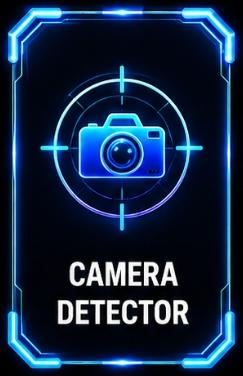

Technical Surveillance / FSI-CD-01
Camera Detector

TSCM STANDARD
Camera Detector Pro
Optical detection technology designed to assist security teams in identifying concealed optical camera lenses and surveillance devices.
Detection range: Up to 15 meters
Spectrum: Optical laser + IR sensor array
Battery: Up to 8 hours continuous operation